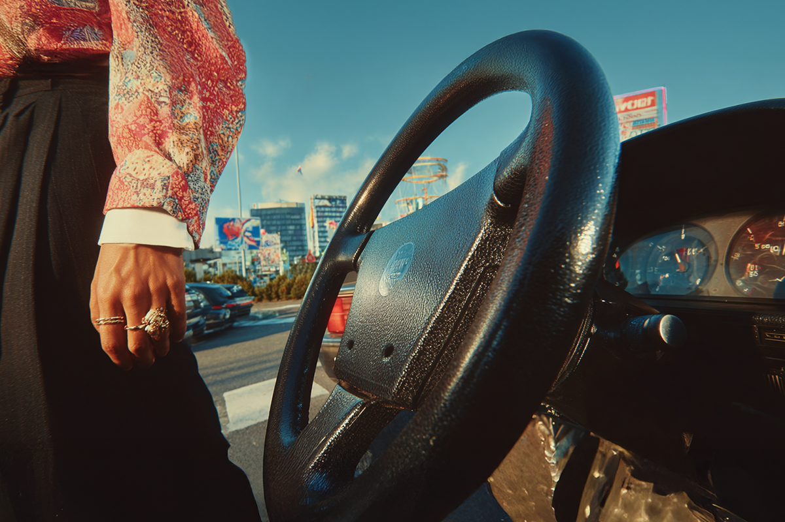
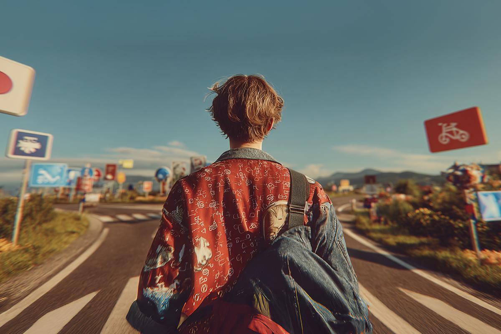
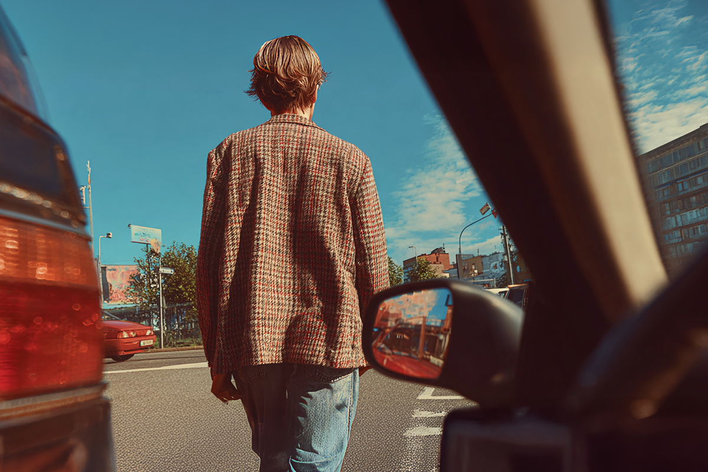
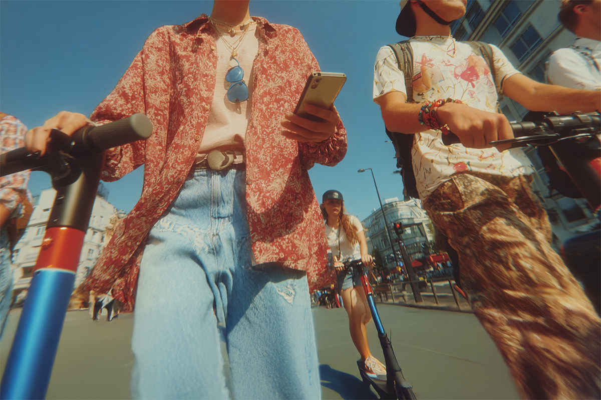

Generación Z: cada vez más lejos del volante
Al menos del de los autos.
Al menos del de los autos.

Si nos remontamos a los años ochenta o noventa, aprender a manejar y sacar licencia de conducir era como un “rito de paso”. Cumplías 18 años, y era lógico que tu máxima aspiración era poder conducir lo antes posible. Tanto así, que incluso en Chile se habilitó la opción de poder sacar la licencia a los 17 años, manejando con un adulto al lado.
Hoy, esto está muy lejos de ser la realidad. Los jóvenes cada vez le están dando menos prioridad a aprender a conducir. En Estados Unidos, los estudios les llaman “zoomers”, nacidos entre 1996 y 2012 y acostumbrados a las aplicaciones de transporte y redes sociales. Según datos del Washington Post, en 1997, un 62% de los adolescentes norteamericanos tenía licencia. En 2020, en cambio, solo un 45% tenía una. Cuestionados, responden que simplemente ya no ven la posibilidad de manejar como un pasaporte a la libertad o un hito de vida importante.

Una de las razones es, sin duda, la relevancia económica que tiene en el presupuesto familiar. Manejar se ha vuelto más caro. Desde la pandemia, los costos de mantenimiento de un auto han subido, al menos en Estados Unidos, un 14%. También, los precios de los vehículos han subido gracias a una serie de factores: inflación, aumento en costos de producción, la subida de precio de los autos usados y la depreciación de las monedas locales.
Para tener una referencia, según Kelley Blue Book, una empresa de investigaciones sobre la industria automovilística, el precio promedio para un auto nuevo está en alrededor de $48.000 dólares, mientras que antes de la pandemia era de aproximadamente $38.000 dólares.

Esta generación también está mucho más cercana a los temas de impacto ambiental. Acorde al Pew Research Center, los Gen Z se involucran mucho más en campañas ambientales que sus predecesores. Solo basta con considerar este dato: un 32% de los jóvenes tomaron acción en causas ambientales durante el último año, ya sea donando recursos o en voluntariados.
Esa conciencia se traduce en hábitos de movilidad distintos. Los Gen Z son usuarios más frecuentes de scooters, bicicletas eléctricas y aplicaciones de transporte compartido, facilitados además por el acceso inmediato a tecnologías que antes no existían. No es casual que cerca de la mitad de los usuarios de estas plataformas tenga entre 18 y 29 años. A esto se suma un cambio en la forma de socializar: se desplazan menos porque muchas actividades que antes requerían presencia física hoy ocurren en línea, desde reuniones hasta espacios de juegos.

Pero explicar este fenómeno solo desde los precios o los hábitos es insuficiente. Para la Generación Z, el auto dejó de ser un símbolo de estatus o independencia. Hoy se percibe más como una carga que como un logro: gastos fijos, tiempo perdido en tráfico, dificultad para estacionar y un impacto ambiental cada vez más cuestionado.
La idea de libertad también cambió. Ya no pasa necesariamente por tener un vehículo propio, sino por poder moverse sin ataduras, combinando transporte público, bicicletas, scooters y aplicaciones de movilidad según la necesidad del momento. En ciudades cada vez más congestionadas, manejar dejó de ser sinónimo de eficiencia.

La pregunta que queda abierta es si esta distancia con el volante es solo una etapa o un cambio cultural más profundo. Lo seguro es que, por primera vez en décadas, una generación no ve en el auto un hito de vida. Y ese giro —silencioso, pero constante— está obligando a repensar la forma en que entendemos la movilidad, la ciudad y la idea de lo que significa la independencia.
¿Será que pronto saldrán seguros para humanos que andan en bicicleta o scooters? Está por verse.
 Finanzas
FinanzasSi últimamente has abierto LinkedIn, probablemente lo has visto: parece que todos hablan del “futuro del trabajo”.
 Finanzas
FinanzasChile no está en el Mundial 2026. Ya lo sabemos, ya dolió, ya hicimos memes tristes y nos resignamos a ver la Copa del Mundo desde la casa.
 Finanzas
FinanzasHace casi dos años me vine a vivir a Italia y llegué con una idea muy instalada en la cabeza: que todo iba a ser mucho más caro que en…